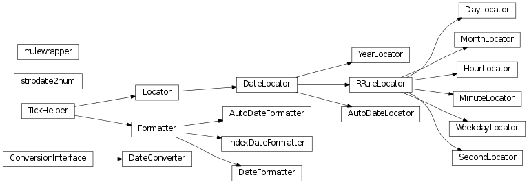

Matplotlib provides sophisticated date plotting capabilities, standing on the shoulders of python datetime, the add-on modules pytz and dateutils. datetime objects are converted to floating point numbers which represent time in days since 0001-01-01 UTC, plus 1. For example, 0001-01-01, 06:00 is 1.25, not 0.25. The helper functions date2num(), num2date() and drange() are used to facilitate easy conversion to and from datetime and numeric ranges.
Note
Like Python’s datetime, mpl uses the Gregorian calendar for all conversions between dates and floating point numbers. This practice is not universal, and calendar differences can cause confusing differences between what Python and mpl give as the number of days since 0001-01-01 and what other software and databases yield. For example, the US Naval Observatory uses a calendar that switches from Julian to Gregorian in October, 1582. Hence, using their calculator, the number of days between 0001-01-01 and 2006-04-01 is 732403, whereas using the Gregorian calendar via the datetime module we find:
In [31]:date(2006,4,1).toordinal() - date(1,1,1).toordinal()
Out[31]:732401
A wide range of specific and general purpose date tick locators and formatters are provided in this module. See matplotlib.ticker for general information on tick locators and formatters. These are described below.
All the matplotlib date converters, tickers and formatters are timezone aware, and the default timezone is given by the timezone parameter in your matplotlibrc file. If you leave out a tz timezone instance, the default from your rc file will be assumed. If you want to use a custom time zone, pass a pytz.timezone instance with the tz keyword argument to num2date(), plot_date(), and any custom date tickers or locators you create. See pytz for information on pytz and timezone handling.
The dateutil module provides additional code to handle date ticking, making it easy to place ticks on any kinds of dates. See examples below.
Most of the date tickers can locate single or multiple values. For example:
# tick on mondays every week
loc = WeekdayLocator(byweekday=MO, tz=tz)
# tick on mondays and saturdays
loc = WeekdayLocator(byweekday=(MO, SA))
In addition, most of the constructors take an interval argument:
# tick on mondays every second week
loc = WeekdayLocator(byweekday=MO, interval=2)
The rrule locator allows completely general date ticking:
# tick every 5th easter
rule = rrulewrapper(YEARLY, byeaster=1, interval=5)
loc = RRuleLocator(rule)
Here are all the date tickers:
- MinuteLocator: locate minutes
- HourLocator: locate hours
- DayLocator: locate specifed days of the month
- WeekdayLocator: Locate days of the week, eg MO, TU
- MonthLocator: locate months, eg 7 for july
- YearLocator: locate years that are multiples of base
- RRuleLocator: locate using a matplotlib.dates.rrulewrapper. The rrulewrapper is a simple wrapper around a dateutils.rrule (dateutil) which allow almost arbitrary date tick specifications. See rrule example.
- AutoDateLocator: On autoscale, this class picks the best MultipleDateLocator to set the view limits and the tick locations.
Here all all the date formatters:
- AutoDateFormatter: attempts to figure out the best format to use. This is most useful when used with the AutoDateLocator.
- DateFormatter: use strftime() format strings
- IndexDateFormatter: date plots with implicit x indexing.
d is either a datetime instance or a sequence of datetimes.
Return value is a floating point number (or sequence of floats) which gives the number of days (fraction part represents hours, minutes, seconds) since 0001-01-01 00:00:00 UTC, plus one. The addition of one here is a historical artifact. Also, note that the Gregorian calendar is assumed; this is not universal practice. For details, see the module docstring.
x is a float value which gives the number of days (fraction part represents hours, minutes, seconds) since 0001-01-01 00:00:00 UTC plus one. The addition of one here is a historical artifact. Also, note that the Gregorian calendar is assumed; this is not universal practice. For details, see the module docstring.
Return value is a datetime instance in timezone tz (default to rcparams TZ value).
If x is a sequence, a sequence of datetime objects will be returned.
Return a date range as float Gregorian ordinals. dstart and dend are datetime instances. delta is a datetime.timedelta instance.
Convert an epoch or sequence of epochs to the new date format, that is days since 0001.
Convert days since 0001 to epoch. d can be a number or sequence.
Convert mx datetime instance (or sequence of mx instances) to the new date format.
Bases: matplotlib.ticker.Formatter
Tick location is seconds since the epoch. Use a strftime() format string.
Python only supports datetime strftime() formatting for years greater than 1900. Thanks to Andrew Dalke, Dalke Scientific Software who contributed the strftime() code below to include dates earlier than this year.
Bases: matplotlib.ticker.Formatter
Use with IndexLocator to cycle format strings by index.
t is a sequence of dates (floating point days). fmt is a strftime() format string.
Bases: matplotlib.ticker.Formatter
This class attempts to figure out the best format to use. This is most useful when used with the AutoDateLocator.
The AutoDateFormatter has a scale dictionary that maps the scale of the tick (the distance in days between one major tick) and a format string. The default looks like this:
self.scaled = {
365.0 : '%Y',
30. : '%b %Y',
1.0 : '%b %d %Y',
1./24. : '%H:%M:%D',
}
The algorithm picks the key in the dictionary that is >= the current scale and uses that format string. You can customize this dictionary by doing:
formatter = AutoDateFormatter()
formatter.scaled[1/(24.*60.)] = '%M:%S' # only show min and sec
Autofmt the date labels. The default format is the one to use if none of the times in scaled match
Bases: matplotlib.ticker.Locator
tz is a tzinfo instance.
Bases: matplotlib.dates.DateLocator
Set the view limits to include the data range.
Bases: matplotlib.dates.DateLocator
On autoscale, this class picks the best MultipleDateLocator to set the view limits and the tick locations.
minticks is the minimum number of ticks desired, which is used to select the type of ticking (yearly, monthly, etc.).
maxticks is the maximum number of ticks desired, which controls any interval between ticks (ticking every other, every 3, etc.). For really fine-grained control, this can be a dictionary mapping individual rrule frequency constants (YEARLY, MONTHLY, etc.) to their own maximum number of ticks. This can be used to keep the number of ticks appropriate to the format chosen in class:AutoDateFormatter. Any frequency not specified in this dictionary is given a default value.
tz is a tzinfo instance.
interval_multiples is a boolean that indicates whether ticks should be chosen to be multiple of the interval. This will lock ticks to ‘nicer’ locations. For example, this will force the ticks to be at hours 0,6,12,18 when hourly ticking is done at 6 hour intervals.
The AutoDateLocator has an interval dictionary that maps the frequency of the tick (a constant from dateutil.rrule) and a multiple allowed for that ticking. The default looks like this:
self.intervald = {
YEARLY : [1, 2, 4, 5, 10],
MONTHLY : [1, 2, 3, 4, 6],
DAILY : [1, 2, 3, 7, 14],
HOURLY : [1, 2, 3, 4, 6, 12],
MINUTELY: [1, 5, 10, 15, 30],
SECONDLY: [1, 5, 10, 15, 30]
}
The interval is used to specify multiples that are appropriate for the frequency of ticking. For instance, every 7 days is sensible for daily ticks, but for minutes/seconds, 15 or 30 make sense. You can customize this dictionary by doing:
locator = AutoDateLocator()
locator.intervald[HOURLY] = [3] # only show every 3 hours
Try to choose the view limits intelligently.
Pick the best locator based on a distance.
Refresh internal information based on current limits.
Bases: matplotlib.dates.DateLocator
Make ticks on a given day of each year that is a multiple of base.
Examples:
# Tick every year on Jan 1st
locator = YearLocator()
# Tick every 5 years on July 4th
locator = YearLocator(5, month=7, day=4)
Mark years that are multiple of base on a given month and day (default jan 1).
Set the view limits to include the data range.
Bases: matplotlib.dates.RRuleLocator
Make ticks on occurances of each month month, eg 1, 3, 12.
Mark every month in bymonth; bymonth can be an int or sequence. Default is range(1,13), i.e. every month.
interval is the interval between each iteration. For example, if interval=2, mark every second occurance.
Bases: matplotlib.dates.RRuleLocator
Make ticks on occurances of each weekday.
Mark every weekday in byweekday; byweekday can be a number or sequence.
Elements of byweekday must be one of MO, TU, WE, TH, FR, SA, SU, the constants from dateutils.rrule.
interval specifies the number of weeks to skip. For example, interval=2 plots every second week.
Bases: matplotlib.dates.RRuleLocator
Make ticks on occurances of each day of the month. For example, 1, 15, 30.
Mark every day in bymonthday; bymonthday can be an int or sequence.
Default is to tick every day of the month: bymonthday=range(1,32)
Bases: matplotlib.dates.RRuleLocator
Make ticks on occurances of each hour.
Mark every hour in byhour; byhour can be an int or sequence. Default is to tick every hour: byhour=range(24)
interval is the interval between each iteration. For example, if interval=2, mark every second occurrence.
Bases: matplotlib.dates.RRuleLocator
Make ticks on occurances of each minute.
Mark every minute in byminute; byminute can be an int or sequence. Default is to tick every minute: byminute=range(60)
interval is the interval between each iteration. For example, if interval=2, mark every second occurrence.
Bases: matplotlib.dates.RRuleLocator
Make ticks on occurances of each second.
Mark every second in bysecond; bysecond can be an int or sequence. Default is to tick every second: bysecond = range(60)
interval is the interval between each iteration. For example, if interval=2, mark every second occurrence.
Bases: dateutil.rrule.rrulebase
Bases: object
The relativedelta type is based on the specification of the excelent work done by M.-A. Lemburg in his mx.DateTime extension. However, notice that this type does NOT implement the same algorithm as his work. Do NOT expect it to behave like mx.DateTime’s counterpart.
There’s two different ways to build a relativedelta instance. The first one is passing it two date/datetime classes:
relativedelta(datetime1, datetime2)
And the other way is to use the following keyword arguments:
- year, month, day, hour, minute, second, microsecond:
- Absolute information.
- years, months, weeks, days, hours, minutes, seconds, microseconds:
- Relative information, may be negative.
- weekday:
- One of the weekday instances (MO, TU, etc). These instances may receive a parameter N, specifying the Nth weekday, which could be positive or negative (like MO(+1) or MO(-2). Not specifying it is the same as specifying +1. You can also use an integer, where 0=MO.
- leapdays:
- Will add given days to the date found, if year is a leap year, and the date found is post 28 of february.
- yearday, nlyearday:
- Set the yearday or the non-leap year day (jump leap days). These are converted to day/month/leapdays information.
Here is the behavior of operations with relativedelta:
Return seconds as days.
Return minutes as days.
Return hours as days.
Return weeks as days.